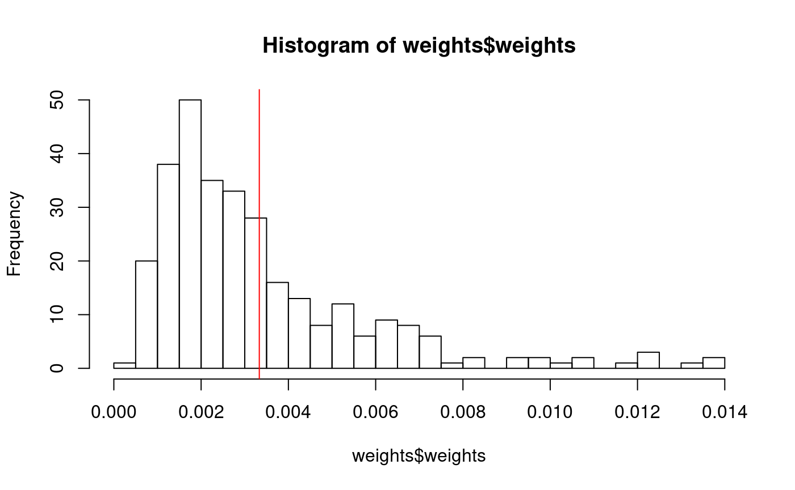
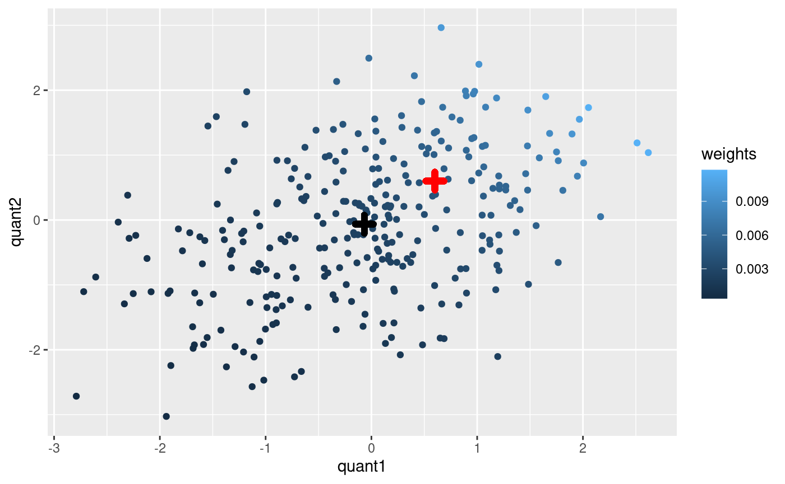

vignettes/tboot.Rmd
tboot.RmdThe tilted bootstrap is a weighted resampling technique. The goal is to take a reasonably realistic sample of the rows of dataset in such a way that the column means approximate a user-defined target. In other words, the user can control the marginal means while still preserving intricate relationships among the variables. The “Tilted Bootstrap” is related to the inferential methods proposed by Efron and others (Efron 1981). However, the methods implemented in the ‘tboot’ package are used in a multivariate situation and intended for simulating future outcomes instead of making inference.
This vignette is a tutorial on the use of the ‘tboot’ and ‘tweights’ functions which may be used for ‘scenario based’ frequentist simulations. That is, the user must specify the exact mean for each variable to perform the simulation. An alternative Bayesian approach where the user specifies a marginal distribution is also implemented in the ‘tboot’ package in the ‘tboot_bmr,’ ‘post_bmr,’ and ‘tweights_bmr.’ A seperate vignette is available as a tutorial for the Bayesian approach.
As and example, we simulate the following simple dataset with some categorical, continuous and binary variables.
library(tboot)
set.seed(2018)
color <- sample(c("brown", "green", "blue"), 300, replace = TRUE)
quant1 <- rnorm(300) + ifelse(color=="red", 1, 0)
quant2 <- rnorm(300) + quant1*.5
bin1 <- ifelse(quant1+rnorm(300) > 1, 1, 0)
bin2 <- ifelse(quant2+rnorm(300) > 1, 1, 0)
simData <- data.frame(color, quant1, quant2, bin1, bin2)
head(simData)## color quant1 quant2 bin1 bin2
## 1 blue -1.57511390 -0.3168474 0 0
## 2 blue 1.06242723 0.8183064 0 0
## 3 blue -0.04002905 -0.5788625 0 0
## 4 brown -0.71129317 -0.8974168 0 0
## 5 green 0.26670057 -0.2256420 1 0
## 6 brown 1.04736902 0.0748104 1 0To use the ‘tboot’ package we must first code the variables as numeric matrix. To do this, we code the ‘color’ variable above with two dummy variables.
dataset=as.matrix(cbind(
colorBlue=ifelse(simData$color=="blue",1,0),
colorBrown=ifelse(simData$color=="brown",1,0),
simData[,-1]))
colMeans(dataset)## colorBlue colorBrown quant1 quant2 bin1 bin2
## 0.32000000 0.33333333 -0.06706536 -0.06444624 0.22333333 0.24333333Suppose that, in the bootstrapped dataset, we want all the column means to be around 0.4.
We now need to find the row-level resampling weights. The weights are as close to uniform as possible while still making sure the bootstrap approximates the target column means.
## ----------------------------------------------------------------
## Optimization was successful. The weights have a sampleing
## distribution with means close to the attemted target:
## colorBlue colorBrown quant1 quant2 bin1 bin2
## Achieved Mean 0.4 0.4 0.4 0.4 0.4 0.4
## Target Mean 0.4 0.4 0.4 0.4 0.4 0.4
## Maximum weight was: 0.01383739
## ----------------------------------------------------------------Next, we bootstrap a very large sample using the weights.
The column means are close to the target even though all the rows came from the original data.
## colorBlue colorBrown quant1 quant2 bin1 bin2
## 0.4020400 0.4003600 0.3968286 0.3986242 0.3984800 0.4004900The weights for each sample will now differ:

The red line in the histogram above represents the probability for uniform resampling. We recommend against using the resampling methods implemented in this package when the weight of any one sample is too high. In some cases, this may be improved by transforming variables or removing/Winsorizing outlier samples. Also, using a different distance measure as described below in the section on Methodology may help. In general, if the target value is far from the observed mean of your data, it is likely that a handful of samples will be highly weighted.
Suppose we wish to constrain the mean for only as subset of the variables. For example, we may wish to constrain only the variables ‘quant2’ and ‘bin1’ to have a mean value of 0.4 and 0.5 respectively. We would determine the weights as follows:
## ----------------------------------------------------------------
## Optimization was successful. The weights have a sampleing
## distribution with means close to the attemted target:
## quant1 quant2
## Achieved Mean 0.5 0.5
## Target Mean 0.5 0.5
## Maximum weight was: 0.01178888
## ----------------------------------------------------------------We can now bootstrap from the entire dataset as like this:
boot <- tboot(weights, nrow = 1e5)
rbind("dataset mean" = colMeans(dataset),
"tbootstrap mean" = colMeans(boot))## colorBlue colorBrown quant1 quant2 bin1
## dataset mean 0.3200 0.3333333 -0.06706536 -0.06444624 0.2233333
## tbootstrap mean 0.2765 0.3531700 0.49919188 0.49463529 0.3444700
## bin2
## dataset mean 0.2433333
## tbootstrap mean 0.3835500As may be seen, by changing the target mean of ‘quant2’ and ‘bin1’ we have also significantly changed the mean of other variables such as ‘quant1’ and ‘bin2.’ In many cases this is exactly what we would want to do, but it may occasionally be problematic. For example, if the one of the variables is a baseline variable in a clinical trial. In this case, it is recommended that the user constrain the mean of the baseline covariate to be the same as in the observed data.
The actual weights for each sample may be extracted as ‘weights$weigths.’ As an instructive look at what the weights represent here is a graph of the weights. The red point marks the position of the new assumed mean while the black point marks the position of the data sample mean.
## Registered S3 methods overwritten by 'ggplot2':
## method from
## [.quosures rlang
## c.quosures rlang
## print.quosures rlangggplot(pltdta, aes(x=quant1, y=quant2, color=weights)) + geom_point() +
geom_point(aes(x=.6, y=.6), shape = 3, colour = "red", size = 2, stroke = 3)+
geom_point(aes(x=mean(pltdta$quant1), y=mean(pltdta$quant2)),
shape = 3, colour = "black", size = 2, stroke = 3)
The variance can also be constrained by creating a variable with the second moment. For example, suppose we wanted to constrain the variance of quant1 to 0.75 and the mean to be 0.5 . We could do as follows:
dataset=cbind(dataset, quant1_2= (dataset[,"quant1"]-0.5)^2)
weights <- tweights(dataset = dataset,
target = c(quant1=0.5, quant1_2=0.75),)## ----------------------------------------------------------------
## Optimization was successful. The weights have a sampleing
## distribution with means close to the attemted target:
## quant1 quant1_2
## Achieved Mean 0.5 0.75
## Target Mean 0.5 0.75
## Maximum weight was: 0.006857805
## ----------------------------------------------------------------## [1] 1.097222## [1] 0.7537766## colorBlue colorBrown quant1 quant2 bin1
## dataset mean 0.3200 0.3333333 -0.06706536 -0.06444624 0.2233333
## tbootstrap mean 0.2884 0.3573000 0.50772144 0.19314284 0.3379400
## bin2 quant1_2
## dataset mean 0.2433333 1.4151279
## tbootstrap mean 0.2971900 0.7538286The goal is to find a bootstrap resampling distribution that
Let \(q = (q_1, \ldots, q_n)\) be the resampling distribution. Here, \(n\) is the number of rows in the original dataset, and \(q_i\) is the probability that row \(i\) will be chosen for a given row of the bootstrap dataset. Let \(p = (p_1, \ldots, p_n)\) be uniform (i.e., \(p_i = 1/n\), the resampling distribution of the ordinary bootstrap).
We want to find a \(q\) that is as close to \(p\) as possible. We consider three possible measures of distance. First, the Euclidean distance is defined as: \[ D_{Euclidian}= \sum_{i = 1}^n (p_i - q_i)^2 \] Second, the Backwards Kullback-Leibler (KL) divergence (which is technically not considered a distance metric) from \(p\) to \(q\) is defined as: \[ \begin{aligned} D_{KL}(q||p) &= \sum_{i = 1}^n q_i \log \frac{q_i}{p_i} \\ &= \sum_{i = 1}^n q_i \log nq_i \end{aligned} \]
Third, the Forwards Kullback-Leibler (KL) divergence from \(q\) to \(p\) is defined as: \[ D_{KL}(p||q) = \sum_{i = 1}^n p_i \log \frac{p_i}{q_i} \\ \]
Note that minimizing \(D_{KL}(p||q)\) is the same as minimizing \(-\sum_{i = 1}^n \log q_i\).
The goal of determining the weights for the ‘tilted bootstrap’ may be formulated as a constrained optimization problem: \[ q=\underset{q \in S}{\operatorname{argmin}} {D(p,q)} \] where,
\[ S=\{q|\space q_i>0 \space for \space i \in {1...n}, \space and \space \sum_{i = 1}^n q_i=1, \space and \space X^Tq = y \space \}. \] Here \(y\) is a vector of target means for the columns.
In the case of the Euclidean distance the problem is a standard “Quadratic Programming” problem which we solve using the ‘solve.QP’ function from the ‘quadprog’ package.
To solve the problem for the Backwards KL distance, we use the Lagrangian approach. Define \(A=[X|1]\) (i.e. \(A\) is the concatenation of \(X\) with a conformal column of all ones). Also, let \(b=[y^T|1]^T\) (i.e \(b\) is the \(y\) vector with a one element concatenated to the end). The Lagrangian for this optimization problem is
\[ \begin{aligned} L(q, \lambda) &= \sum_{i = 1}^n q_i \log nq_i + \lambda (A'q - b) \\ &= \sum_{i = 1}^n \left [ q_i \log nq_i + \sum_{k = 1}^{K+1} \lambda_k (A_{ik} q_i - b_k) \right ] \end{aligned} \]
where
To optimize, we start by setting the gradient of \(L\) equal to zero and solve for a locally optimal \(q\) in terms of \(\lambda\). \[ \begin{aligned} 0 &= \left . \frac{\partial L}{\partial q_i} \right |_{(q, \ \lambda)} \\ &= \log nq_i + \frac{1}{n} + A_i' \lambda \\ \log nq_i &= -\frac{1}{n} - A_i' \lambda \\ q_i &= e^{-A_i' \lambda^*} \end{aligned} \] Here, \(\lambda^*\) is scaled and recentered to absorb the constants in the equation.
Here, \(X_i\) is the \(i\)’th row of \(X\) (expressed as a column vector). Hence, the locally optimal \(q\) in terms of the vector \(\lambda^*\) is
\[q^*(\lambda^*) = \left (e^{-A_1' \lambda^*}, \ldots, e^{-A_n' \lambda^*} \right ) \] To find \(\lambda^*\), we solve the equation \(A'q^*(\lambda^*) = b\) by using the Newton-Raphson algorithm. Thus, it turns out that backwards version of the KL distance results in what is called “exponential tilting.” Some of the elegant properties of exponential tilting are described in a different vignette.
Similarly, it may be shown for the forward version of the KL, that the locally optimal \(q\) in terms of \(\lambda\) is
\[q^*(\lambda) = \left (\frac{1}{A_1^T \lambda}, \ldots, \frac{1}{ A_n^T \lambda} \right ) \]
However, tboot’s current implementation of forward KL distance is not very stable. A warning will be issued if the user selects the forward KL distance in the tboot package.
If the data matrix used to determine the weights is not full rank, tweights will likely fail. Consider reducing the number of columns being constrained to deal with this issue.
Sometimes the desired constraint may not be achievable. This often occurs when the desired target differs from the data by a large amount. If the target is not achievable, tweights will give a warning, then it will find the “closest” achievable constraint. “Closest” is measured by a weighted euclidean distance. Thus the target (\(y\)) is replaced with: \[ y_{new}=X'q^* \] where \[ q^*=\underset{q^* \in S^*}{\operatorname{argmin}} {(X'q - y)'W(X'q - y)} \] and \(S^*={q^*|\space \sum_{i = 1}^n q_i^* = 1}\). The weights (\(W\)) is a diagonal matrix with diagonal entries \(W_{kk}=1/s^2_k\) where \(s^2_k\) is the sample variance of column \(k\) from the data matrix (\(X\)). We solve this problem using the ‘ipop’ function in the ‘kernlap’ package. Note that ‘kernlab’ is used instead of ‘quadprog’ because the problem is not easily formulated using a full rank matrix for the quadratic form in the problem.
The algorithm may fail to converge properly, and an error or warning will be issued.
As previously mentioned if any sample is too highly weighted, the tilted bootstrap approach is not recommended. See Example 1 above for more discussion about this issue.
In many cases, the problems described above can be avoided by the use of the ‘Nindependent’ option in the ‘tweights’ function. We suggest that typically, if this option is used, the user set Nindependent=1. This means that one one additional “special” sample is assumed to exist in the original data. If ‘tboot’ draws this special sample, it will proceed to bootstrap each variable independently so that the variables are independent for that patient. The weights for each independent variable bootstrap are set so that (if possible) the “special” sample would average to the target. In effect, the Nindependent option makes the correlation structure slightly less dependent. In exchange for the small bias created, the user will be able to better achieve a target even when the dataset available is small or ill-conditioned. This method is used for the Bayesian marginal reconstruction method as it helps eliminate errors in corners of the parameters space that do not fit well with the data but still occasionally occur. In these cases, the independent sample may occur frequently, so the simulation defaults towards greater independence when the data is not consistent with the parameter. Here is an example of using the Nindependent option where correlation is slightly smaller with augmentation:
x1=rnorm(1000)
x2=rnorm(1000)*sqrt(.1) + x1*sqrt(.9)
dataset2=data.frame(x1=x1, x2=x2)
weights_no_augmentation <- tweights(dataset = dataset2,
target = c(x1=0.2, x2=-0.2))## ----------------------------------------------------------------
## Optimization was successful. The weights have a sampleing
## distribution with means close to the attemted target:
## x1 x2
## Achieved Mean 0.1999998 -0.2000002
## Target Mean 0.2000000 -0.2000000
## Maximum weight was: 0.04102889
## ----------------------------------------------------------------## ----------------------------------------------------------------
## Optimization was successful. The weights have a sampleing
## distribution with means close to the attemted target:
## x1 x2
## Achieved Mean 0.1999998 -0.2000001
## Target Mean 0.2000000 -0.2000000
## Maximum weight was: 0.0409359
## Data augmented with 1 sample(s) with independent variables.
## The final weight of the indpendent sample(s) was: 0.002266406
## ----------------------------------------------------------------boot_no_augmentation <- tboot(weights_no_augmentation, nrow = 1e5)
boot_augmentation <- tboot(weights_augmentation, nrow = 1e5)
cor(boot_no_augmentation)## x1 x2
## x1 1.0000000 0.9400113
## x2 0.9400113 1.0000000## x1 x2
## x1 1.0000000 0.9376946
## x2 0.9376946 1.0000000